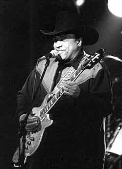

 |
Lonnie BROOKS
18 декабря 1933, Дубиссон, Луизиана
настоящее имя Lee Baker (Ли Бейкер)
Лонни БРУКС Американский блюзовый певец, гитарист. На протяжении своей долгой музыкальной карьеры он перепробовал множество стилей, начав с рок-н-ролла и ритм-энд-блюза. Но с годами он выработал свой индивидуальный блюзовый почерк. В конце 90-х Лонни Брукс стал очевидным лидером чикагского блюза.
|
Лонни Брукс начала изучать блюз в Техасе; первую профессиональную музыкальную работу получил в группе луизианского короля музыки зайдекоу-кейжун Клифтона Шеньера (Clifton Chenier) в середине 50-х. В 1957г. под именем Гитар Джуниор (Guitar Junior) записал дебютный сингл. Первые синглы имели успех только в Луизиане, но благодаря им Лонни Брукс получил работу в престижном среди музыкантов и популярном у публике шоу Сэма Кука. В 60-х обосновался в Чикаго, значительно изменил свой музыкальный стиль в пользу чикагского блюза, и отказался от псевдонима Гитар Джуниор, поскольку в Чикаго тогда играл другой музыкант, пользовавшийся этим же псевдонимом - Лютер Гитар Джуниор Джонсон (Luther "Guitar Junior" Johnson). Записывал синглы на небольших чикагских фирмах, в 1967г. записал ритмэндблюзовый хит "Let It All Hang Out"("Все наружу") на фирме Чесс. Вернулся вновь к луизианскому стилю и старому псевдониму на записи дебютного альбома в 1969г., вышедшем на major фирме "Кэпитол" (Capitol). Альбом не имел коммерческого успеха. В 1975г. выступал в европейских гастролях большого блюзового ревю и записал в Париже альбом при участии Хьюберта Самлина (Hubert Sumlin). Настоящим прорывом стало в 1978г. участие в антологии чикагского клубного блюза, собранной фирмой "Эллигейтор"(Alligator) в серии "Livin' Chicago Blues". Эти записи позволили Бруксу подписать долгосрочный контракт с "Эллигейтор". С середины 90-х в его группе играют его сыновья: Ронни и Уэйн Бейкер-Брукс
Лонни Брукс успешно сочетает роковую подачу с блюзовыми чикагскими традициями. Он блестящий шоу-мэн, умеющий устанавливать близкий контакт с публикой, отчего его клубные концерты пользуются неизменным успехом. Лонни Брукс - талантливый импровизатор, один из немногих на современной сцене, кто непременно включает в свои выступления развернутое и разнообразное гитарное соло.
ВЭБ™'99
Дискография
- Broke And Hungry (Capitol LP, 1969)
- Sweet Home Chicago (Black & Blue LP, 1975)
- Livin' Chicago Blues, vol.III (Alligator LP, 1978)
- Bayou Lightning (Alligator LP, 1979)
- Blues Deluxe (Alligator LP, 1980)
- Turn Of The Night (Alligator LP, 1981)
- Hot Shot (Alligator LP, 1983)
- The Crawl (Charly LP, 1984)(сборник ранних синглов)
- Live At Pepper's (Black Magic LP, 1985)(переиздан на Black Top CD в 1996) Запись концерта 1968г. Аккомпанирует группа Ирла Хукера с Эй-Си Ридом на тенор-саксе.
- Wound Up Tight (Alligator LP, 1986)
- Live From Chicago - Bayou Lightning Strikes (Alligator LP, 1988)
- Satisfaction Guaranteed (Alligator CD, 1991)
- The Alligator Records 20th Anniversary Tour (Alligator CD, 1993)
- Roadhouse Rules (Alligator CD, 1996)
- Deluxe Edition (Alligator CD, 1997)
- Lone Star Shootout with Long John Hunter & Phillip Walker (Alligator CD, 1999)
В сети:
Именной сайт. Самое интересное: фото-галлерея.
Статья Скотта Джордона на сайте Балтиморского блюзового общества
Фотографии выступления Лонни Брукса и сыновей на блюз-фестивале в Каламазу 1998г..
Реал-аудио из альбома Roadhouse Rules.
Фото-галлерея. Обратите внимание на фотографию блюзмэнского гастрольного автобуса внизу страницы.
|